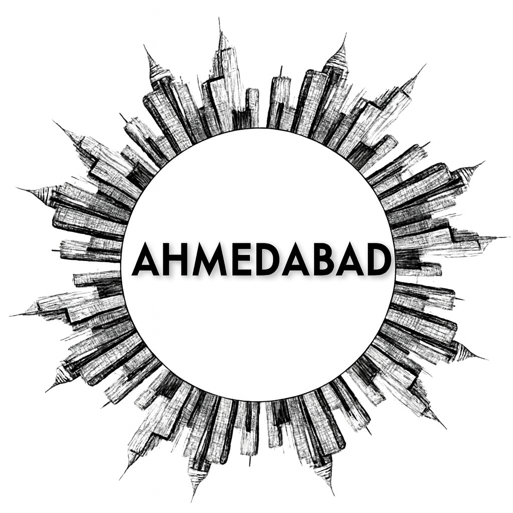

Ahmedabad
Ahmedabad, the largest city in Gujarat, is a vibrant blend of history, culture, and modern development. Known for its textile industry and rich heritage, it was once called Karnavati and is now recognized as India’s first UNESCO World Heritage City. The city lies on the banks of the Sabarmati River and is famous for landmarks like the Sabarmati Ashram, Jama Masjid, and the bustling Manek Chowk market. Ahmedabad celebrates festivals like Uttarayan and Navratri with great enthusiasm, and its cuisine—featuring dishes like dhokla and fafda—is loved across India. With thriving industries, educational institutions, and a growing IT sector, Ahmedabad is a dynamic city where tradition meets progress.
Ahmedabad, nestled on the banks of the Sabarmati River, is a lively city known for its rich history, vibrant culture, and booming industries. It was once the capital of Gujarat and is now a major center for textiles, education, and commerce. The city boasts architectural gems like the Sidi Saiyyed Mosque, Adalaj Stepwell, and the modern marvel of Sabarmati Riverfront. Ahmedabad is also famous for its street food, bustling markets, and colorful festivals like Uttarayan and Navratri. With a blend of heritage and innovation, it stands as one of India’s most dynamic urban centers.
Peaceful Lakes / Nature Spots
Historical Places
Local Markets
Famous Festivals
Famous Local Food
More Details
Gallery